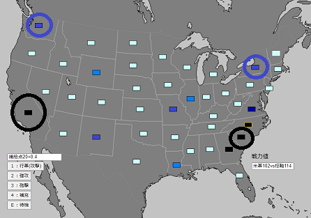

戦力差による戦闘結果の変化を削除
砲撃・強攻を削除
補充のための必要補給物資を6→15に変更
部隊行動による物資消費を削除
北軍の補給ボーナスを削除
枢軸軍上陸(1945)シナリオを削除
1930年代に起きた架空の第二次アメリカ内戦を指揮するゲームです。
AIは存在しないため、両陣営をプレイヤーが担当するソロプレイ専用ゲームとなっています。
PC専用です(スマホでは操作性が非常に悪い)。
ランダム選ばれる部隊に命令を下してきます。
選べる命令は「行軍(攻撃)」「補充」の2種です。
「行軍(攻撃)」は選択した州に向かって移動、その州に敵軍がいれば1部隊を選んで攻撃する命令です。
攻撃した部隊、攻撃を受けた部隊は、双方1ダメージを受けます。
攻撃を受けた側は退却を行います。退却しない(できない)場合、1ダメージ追加で受けます。
退却先には、"敵陣営の占領している州に隣接していない"自軍占領下の州しか選べません。
「補充」は戦力値を2回復させる命令です。補給物資(後述)を追加で15消費します。補給下(後述)に無い場合は命令できません。
・補給物資
15を消費することで、部隊の補充ができます。
補給物資は毎手番ごとに占領している州の値の10分の1が与えられます。
・補給途絶
北軍は「ニューヨーク州」(アメリカ北東部)、「ワシントン州」(アメリカ北西部)
南軍は「フロリダ州」(アメリカ南東部)、「イリノイ州」(南軍占領下アメリカ中央部)
が補給拠点となっており、これらの州から自軍占領下の州でつながらない州は、補給が途絶していると判定され、全ダメージが2倍になります。
・行軍
各部隊には、以下の回数まで命令を行えます。
民兵：１回 歩兵(予備役含む)：２回 戦車及び騎兵：３回
ただし、攻撃・補充(つまり行軍以外)を行うと、そこで行動終了となります。
歩兵が行える行動例 〇行軍→行軍 〇行軍→攻撃 〇行軍→補充など
歩兵が行えない行動例 ×攻撃→行軍 ×攻撃→攻撃 ×補充→行軍など
戦車及び騎兵の場合 〇行軍→行軍→攻撃 〇行軍→行軍→補充 ×攻撃→行軍→行軍 ×行軍→攻撃→補充
・操作
左下の選択肢は「1」「2」「3」のキーで選択できます。
「Qキー」「Rキー」で攻撃部隊の選択、「3」でキャンセル選択肢が選べます。
・詳細な仕様
毎ターン、行動できる陣営は各陣営の戦力を参照して最終的にはランダムに決まります(例えば各戦力が北軍60vs南軍30であれば、北軍に手番が回ってくる確率は南軍の2倍となる)。
ランダムに手番を決めるため、例えば4連続で南軍が選ばれる可能性もありますが(両軍戦力が同等な場合6％)、最終的にはどちらの陣営にも行動の機会が回ってくるはずです。
補給拠点は敵側の物を占領しても使用することはできません(例えば北軍がイリノイ州を占領しても、そこから補給は受けられない)。
ウィスコンシン州とミシガン州は隣接していません。ニューヨーク州とミシガン州も隣接していません(間はカナダ領土)。
一方の側の部隊が全滅するとシステム上はゲーム終了となりますが、それ以前に大勢が決した時点でそれ以上遊ぶ意味はあまりありません。
いきなり部隊を動かせと言われても、何を基準に動かせばよいか分からないと思いますので、簡単な指針を以下で示します。
・州を占領しよう
州を占領することで得られる補給の量が増加し、敵側が得られる補給の量が減少します。
補給物資があると部隊の補充を行えるため、損害費が1:1でも多くの州を占領していれば回復力で最終的に勝利できます。
・敵を包囲しよう
攻撃を受けた場合、撤退する必要がありますが(撤退しない場合は追加で1ダメージ)、撤退は敵側が占領している州と隣接していない州にしか行えません。
また、補給拠点(ニューヨーク州、ワシントン州、フロリダ州、イリノイ州)から補給を受けられない場合、ダメージは2倍で計算されます。
つまり、敵を自軍包囲下に置き、撤退できなくしたり、補給が受けられなくするだけで、戦闘で非常に有利になれます。
・戦線を形成しよう
逆に敵側に包囲されないためには、戦線を形成する必要があります。
部隊を横一列に並べ、どの州にも部隊が存在するという状況を作ることで、相手側の行動を制限し、包囲されるリスクを減らすことができます。
・戦線を突破しよう
戦線を形成されたとしても、それを突破することで敵を包囲下に置くことができます。
戦線の最も弱い部分、例えば民兵師団が守備している州などに攻撃を集中し、撤退を強要したり、あるいは敵部隊を消滅させることで戦線を突破しましょう。
・なぜ行動する陣営、部隊がランダムなのか
これは戦闘における不確定性を再現しています。
戦闘においては、常に指揮官は一部の情報しか把握することができません。
我が部隊の士気は高い、と報告してくる部下は自信過剰かもしれませんし、敵部隊の能力は自軍諜報部隊の推測よりも高いかもしれません。
天気予報は当たらず、現地には地図に記載のない地形があったり、予想外の農民反乱に悩まされるかもしれません。
そうした指揮官が把握できない要素(戦場の霧)を再現する方法として、次行動できる部隊がどこか分からない、というシステムを採用しています。
本作はボード・ウォーゲームの影響を強く受けています。
本ゲームからウォーゲームに関心を持っていただければ幸いです。
補給拠点は以下の通りです。

補給物資ボーナスは両軍ともにありません。